Materials Genomics
Unit 1: Quantum Mechanics and Quantum Chemistry
FAU Erlangen-Nürnberg


Introduction
Why Quantum Mechanics in Materials Genomics?
- Materials properties originate at the atomic scale — governed by quantum mechanics
- Understanding QM is prerequisite for simulation methods (DFT, MD) that generate our data
- This unit builds the conceptual foundation for all later computational and ML units
Lecture Roadmap
Part I — Historical Background
- Classical physics and its limits
- Blackbody radiation & UV catastrophe
- Wave-particle duality
- Atomic models: Thomson → Rutherford → Bohr
- De Broglie & matter waves
- Stern-Gerlach & electron spin
Part II — Quantum Mechanics
- Schrödinger’s equation & the hydrogen atom
- Born interpretation
- Postulates and formalism of QM
- Bra-Ket notation & Hilbert spaces
- Observables and operators
Historical Background
Concepts of Classical Physics (I)
By the late 19th century, physics rested on three pillars:
- Particle mechanics — described by Newton’s laws
- Electrodynamics — described by Maxwell’s equations; light understood as electromagnetic wave
- Thermodynamics — two competing schools of thought:
- Macroscopic: phenomenological thermodynamics (Carnot, Clausius) — thermodynamic cycles
- Microscopic: statistical mechanics (Maxwell, Gibbs, Boltzmann) — ideal gas, entropy
Concepts of Classical Physics (II)
- The “atomistic” approach was viewed with suspicion — rejected by Ernst Mach and Wilhelm Ostwald
- Early hypothetical crystal models existed, but experimental methods (e.g. X-ray diffraction) were not yet available
- Liquids were not understood on a microscopic level
- Energies and momenta are continuous quantities — no discretization anywhere
The Hubris of Classical Physics
“The more important fundamental laws and facts of physical science have all been discovered, and these are now so firmly established that the possibility of their ever being supplanted in consequence of new discoveries is exceedingly remote.”
— Albert A. Michelson, University of Chicago, 1894
As we shall see, this confidence was profoundly misplaced.
Maxwell’s Equations in Vacuum
Since we will mainly discuss light in vacuum, Maxwell’s equations in vacuum suffice.
In terms of electric field \(\boldsymbol{E}\), magnetic field \(\boldsymbol{B}\), and speed of light \(c\):
\[c^{-2} \frac{\partial^2 E_i}{\partial t^2} = \Delta E_i\]
\[c^{-2} \frac{\partial^2 B_i}{\partial t^2} = \Delta B_i\]
These wave equations predict electromagnetic radiation propagating at speed \(c\) — confirmed experimentally by Hertz (1887).
Experiments at Odds with Classical Physics
Blackbody Radiation — The Experiment
Experimental Setup
- Hollow cubic cavity of graphite
- Small opening approximates a perfect black body: incoming radiation is trapped and unlikely to escape
- The opening also allows measurement of the emitted spectrum
Blackbody Radiation — The Cavity
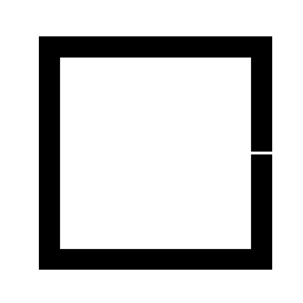
Schematic of a blackbody cavity with a small opening
Blackbody Radiation — Kirchhoff’s Insight
Earlier work by Kirchhoff established:
- Radiation in a cavity in thermal equilibrium depends only on temperature, not on wall material
- The radiation field is isotropic with uniform spectral energy density
- \(\rightarrow\) The spectrum inside the cavity is universal
Blackbody Radiation — Electrodynamics of the Cavity
Starting from idealized perfectly conducting walls:
- Boundary conditions: \(E_{\parallel}=0\), \(E_{\perp}\neq 0\); \(B_{\parallel}\neq 0\), \(B_{\perp}=0\)
- Solutions: standing electromagnetic waves with wavelength
\[\lambda=\frac{2L}{\sqrt{\sum_{i=1}^{3}n_{i}^{2}}}\]
Rayleigh-Jeans Law — Classical Derivation
Rayleigh and Jeans counted modes in the frequency interval \([\nu,\nu+d\nu]\):
\[g(\nu)\,d\nu=\frac{8\pi \nu^2}{c^3}\,d\nu\]
Each mode has average energy \(kT\) (classical equipartition theorem):
\[u(\nu,T)\,d\nu = g(\nu)\,kT\,d\nu\]
Warning
Agrees at low frequencies but diverges at high frequencies — the ultraviolet catastrophe.
This is a severe blow to classical physics: Rayleigh’s derivation makes no assumptions beyond the postulates of classical physics.
Planck’s Revolutionary Solution
Planck’s assumptions:
- Same mode counting as Rayleigh-Jeans
- Wall atoms are electrically charged harmonic oscillators → can interact with the EM field
- Oscillators exchange energy only in discrete quanta: \(E_n = n h \nu\)
- Assume Boltzmann statistics
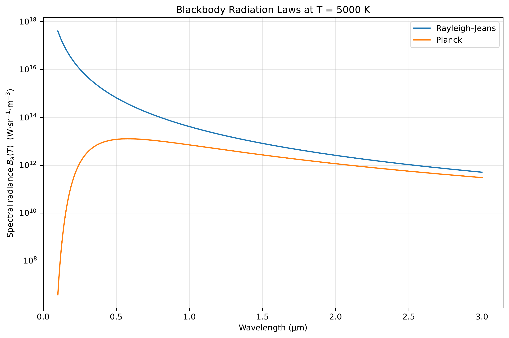
Planck’s Radiation Law
Average energy per mode:
\[\langle E \rangle = \frac{h\nu}{e^{h\nu/kT}-1}\]
Multiply by mode density → Planck’s radiation law:
\[u(\nu)\,d\nu = \frac{8\pi h \nu^3}{c^3}\frac{1}{e^{h\nu/kT}-1}\,d\nu\]
While Planck originally discretized the energy of wall oscillators, this effectively quantizes the electromagnetic field in the cavity.
\(\rightarrow\) This marks the departure from classical physics to quantum mechanics.
Wave-Particle Duality of Light — Photoelectric Effect
At the start of the 20th century, light was understood as an electromagnetic wave (Maxwell).
However, several experiments revealed a particle character:
- Photoelectric effect: light immediately ejects electrons from metal
- Kinetic energy depends on frequency, not intensity
- Einstein: single photons transmit energy to single electrons: \(E_{kin}^{max}=h\nu-W_a\)
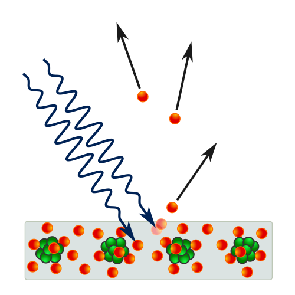
Wave-Particle Duality of Light — Compton Effect
- Compton effect: X-rays scattered off electrons emerge with less energy
- Behaves as expected if light carries momentum and transfers energy to electrons
- Resembles an elastic collision between particles
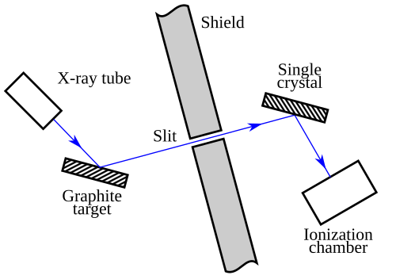
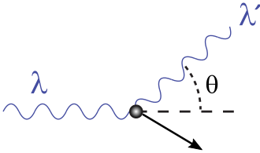
Taylor’s Feeble-Light Double Slit
This experiment sharply exposes the limits of a purely classical picture.
Experimental Setup
- Monochromatic light illuminates two narrow slits
- A screen records the intensity behind the slits
- The source intensity is made extremely small — ideally emitting single photons
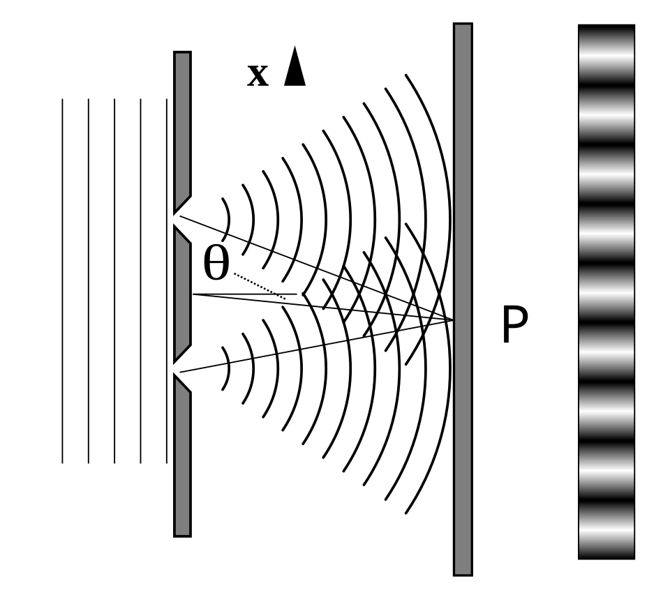
Taylor’s Feeble-Light Double Slit — Observation
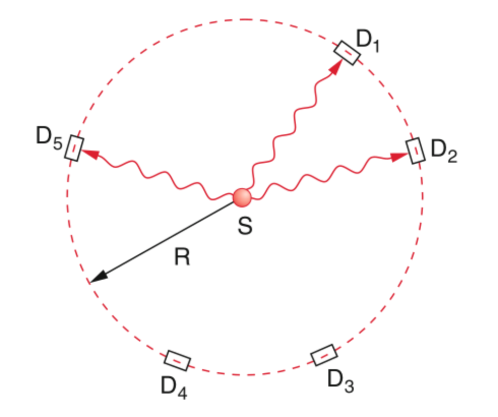
Observation
Classical wave optics (Huygens’ principle) explains the interference pattern, but cannot explain single, localized detection events.
\(\rightarrow\) Light behaves as both wave and particle.
Evolution of the Atomic Model
Experimental Foundations of Atomic Models
Known experimental facts
- Electrons exist as part of the atom (cathode rays, cloud chamber)
- Atoms are electrically neutral
- Hydrogen spectrum known to high precision (Rydberg)
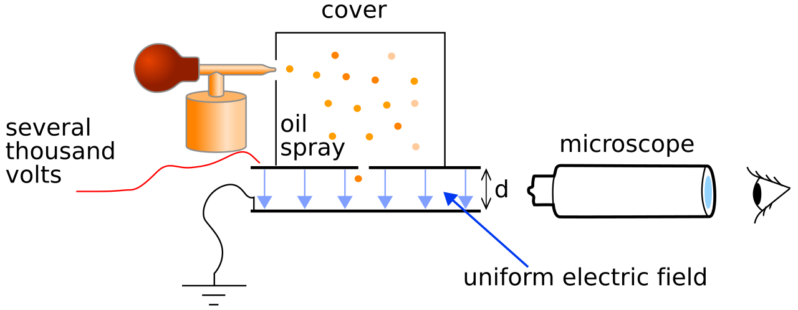
Thomson’s Plum Pudding Model
Thomson’s assumptions
- Electrons embedded in a large positive background — like raisins in plum pudding
- Electrons maximize separation due to Coulomb repulsion
- Mass distribution unclear
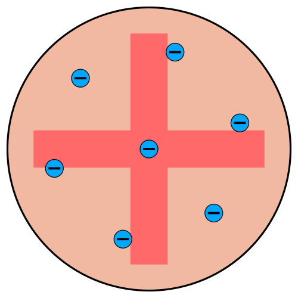
Rutherford’s Scattering Experiment
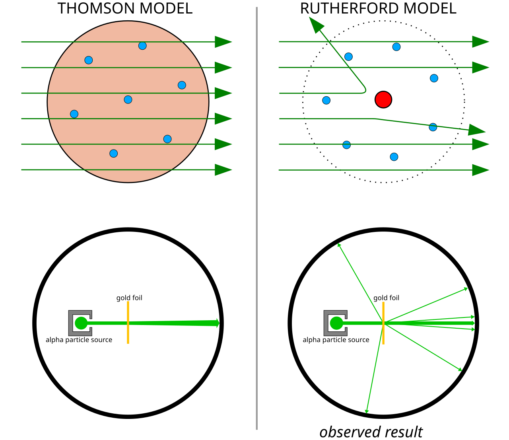
Rutherford’s \(\alpha\)-ray experiments demonstrated:
- Mass concentrated in a small core
- Core is positively charged
- Electrons orbit the nucleus, repelling each other while attracted to the positive core
Bohr’s Atomic Model
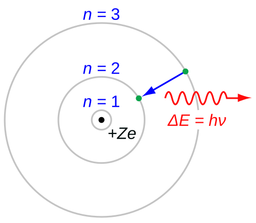
Bohr’s assumptions
- Atoms cannot absorb/radiate continuous energy → stable orbits
- Electrons obey Newtonian mechanics
- Stable orbits via discretized angular momentum: \(m_e v r = n \hbar\)
- Light absorption/emission via Planck relation \(E=h\nu\)
Criticism of Bohr’s Model
- Classical EM: an accelerating charge (orbiting electron) must radiate → model is internally inconsistent
- Works for hydrogen and hydrogen-like ions, but fails for multi-electron atoms
- Angular momentum prediction wrong: for \(n=1\), measured orbital angular momentum is zero, but Bohr predicts \(\hbar\)
- Discretization assumptions are ad hoc — no fundamental justification
\(\rightarrow\) A better theory is urgently needed.
De Broglie’s Postulate — Matter Waves
De Broglie postulate: matter also behaves like waves with wavelength
\[\lambda_{dB} = \frac{h}{|\boldsymbol{p}|}\]
De Broglie reinterpreted Bohr’s stable orbits as standing waves:
\[n \lambda_{dB} = 2 \pi r\]
De Broglie & Bohr’s Angular Momentum
For an orbiting electron with velocity \(v\):
\[n \frac{h}{m_e v} = 2 \pi r\]
Rearranging for angular momentum \(l = m_e v r\):
\[l = n \frac{h}{2 \pi}\]
Elegant, but not a conclusive proof. It also did not fix the major inconsistencies of Bohr’s model, including the incorrect angular momentum for \(n=1\).
Davisson-Germer Experiment — Setup
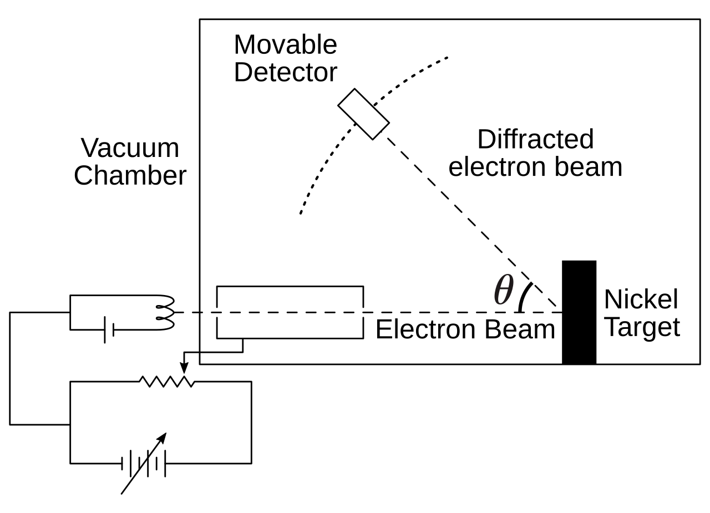
- Davisson & Germer investigated elastic backscattering of electrons on nickel surfaces
- Electron beam directed perpendicular to crystal surface in vacuum
- By accident (oxidation + annealing), they created large monocrystalline areas on the surface
Davisson-Germer — Results
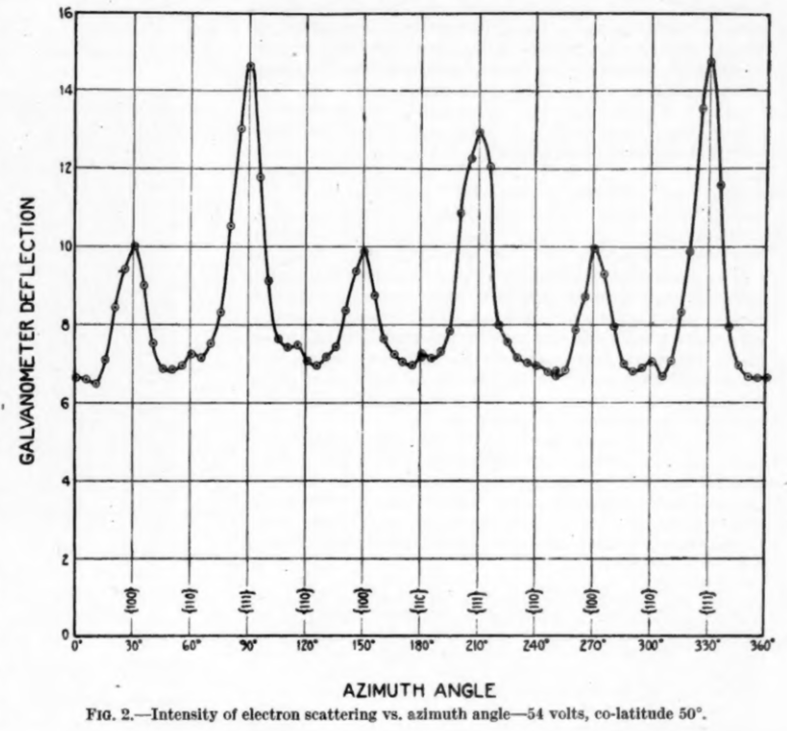
Experimental findings
- Clear diffraction patterns analogous to X-ray scattering
- Wavelength and kinetic energy followed exactly de Broglie’s prediction
- \(\rightarrow\) Matter waves are real!
Stern-Gerlach — The Discovery of Electron Spin
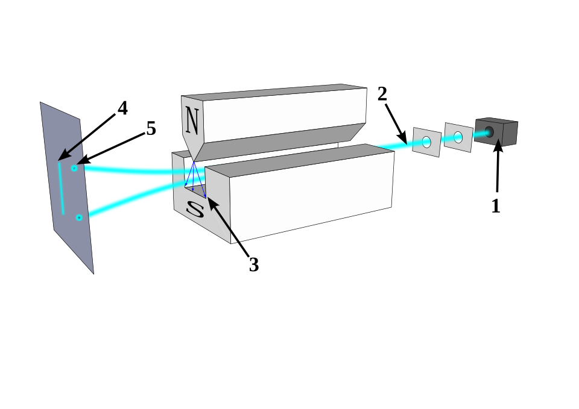
Stern-Gerlach apparatus: 1) oven 2) focusing screens 3) inhomogeneous \(\boldsymbol{B}\) field 4) classical prediction 5) observation. Source: Wikipedia
Stern-Gerlach — Setup and Prediction
Experimental Setup
- Oven evaporates silver atoms (single valence electron)
- Beam focused through two screens
- Beam traverses inhomogeneous magnetic field \(\boldsymbol{B}\)
- Atoms with magnetic dipole \(\boldsymbol{\mu}_m\) experience force: \(\boldsymbol{F} = -\boldsymbol{\mu}_m \cdot \nabla(\boldsymbol{B})\)
Stern-Gerlach — Result
Classical prediction
A continuous strip — dipole can point in any direction
Observation
Silver atoms localize in exactly two spots
\(\rightarrow\) Angular momentum is quantized, and a new intrinsic quantum number — spin — exists.
This cannot be explained by any classical model.
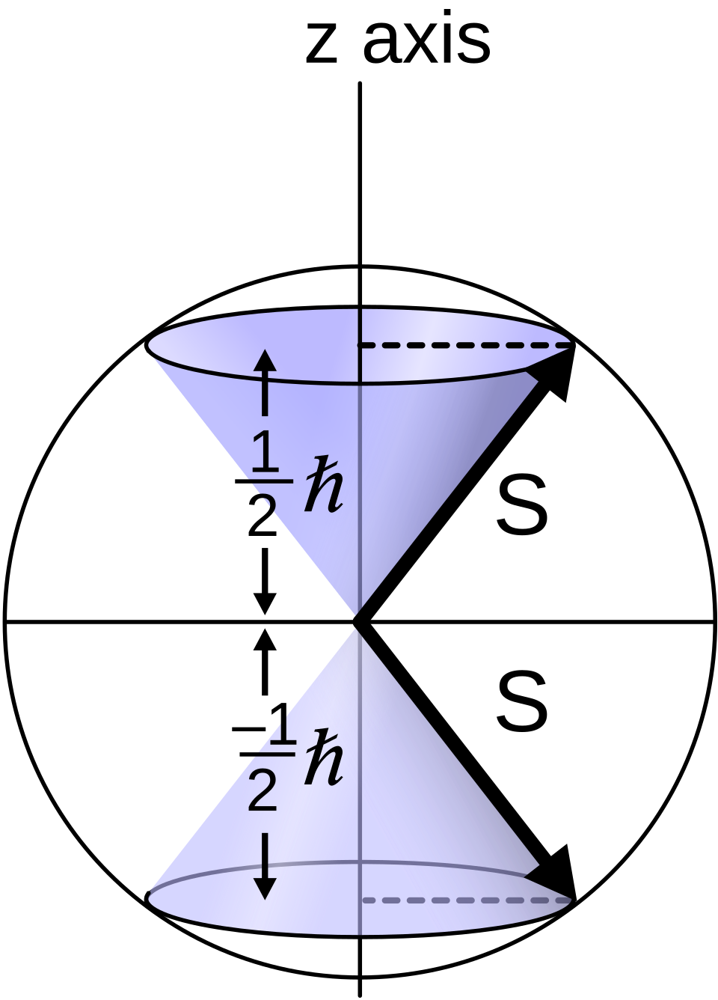
Quantum Mechanics
Schrödinger’s Motivation
- Bohr’s model gave the correct hydrogen spectrum but was logically inconsistent
- De Broglie’s matter-wave hypothesis suggested particles should be described by wave phenomena
- Schrödinger sought an equation analogous to classical wave equations, but adapted to mechanical systems
- Goal: obtain discrete atomic energy levels as eigenvalues of a continuous wave problem
The Time-Independent Schrödinger Equation
He postulated a stationary wave equation with an eigenvalue problem and external potential:
\[-\frac{\hbar^2}{2m}\Delta \psi + V(\mathbf{r})\psi = E\psi\]
For the hydrogen atom with Coulomb potential \(V(r)=-e^2/r\):
\[\Delta \psi + \frac{2m_e}{\hbar^2}\left(E+\frac{e^2}{r}\right)\psi = 0\]
The Laplacian in Spherical Coordinates
\(\Delta = \nabla^2\) in spherical coordinates:
\[\Delta = \frac{1}{r^2}\frac{\partial}{\partial r}\left(r^2\frac{\partial}{\partial r}\right) - \frac{\hat{L}^2(\theta,\phi)}{\hbar^2 r^2}\]
where the angular momentum operator is
\[\hat{L}^2 = -\hbar^2\left[ \frac{1}{\sin\theta}\frac{\partial}{\partial\theta}\left(\sin\theta\,\frac{\partial}{\partial\theta}\right) + \frac{1}{\sin^2\theta}\frac{\partial^2}{\partial\phi^2}\right]\]
Hydrogen Atom — Separation of Variables
The Schrödinger equation becomes:
\[\left[\frac{1}{r^2}\frac{\partial}{\partial r}\left(r^2\frac{\partial}{\partial r}\right) - \frac{\hat{L}^2}{\hbar^2 r^2} + \frac{2m_e}{\hbar^2}\left(E+\frac{e^2}{r}\right)\right]\psi = 0\]
Use the separable ansatz:
\[\psi(r,\theta,\phi)=R(r)\,\Theta(\theta)\,\Phi(\phi)\]
Separated Equations
Dividing by \(R\Theta\Phi\) yields three independent ODEs with separation constants \(A, B\):
\[\frac{d}{dr}\left(r^2\frac{dR}{dr}\right) + \left(\frac{2m_er^2}{\hbar^2}\left(E+\frac{e^2}{r}\right) - A\right)R = 0\]
\[\frac{1}{\sin\theta}\frac{d}{d\theta}\left(\sin\theta\,\frac{d\Theta}{d\theta}\right) + \left(A - \frac{B}{\sin^2\theta}\right)\Theta = 0\]
\[\Phi^{-1} \frac{\partial^2 \Phi}{\partial \phi^2} + B = 0\]
Solution Constraints
Solutions are found by requiring:
- Finiteness — wavefunctions must not diverge
- Periodicity — \(\Phi(\phi)=\Phi(\phi+2\pi)\)
- Square integrability — \(\int |\psi|^2 dV < \infty\)
Solutions — Radial and Angular Parts
\[R_{n\ell}(r) = N_{n\ell}\, e^{-r/(na_0)}\left(\frac{2r}{na_0}\right)^\ell L_{n-\ell-1}^{2\ell+1}\!\left(\frac{2r}{na_0}\right)\]
with \(n=1,2,3,\dots\) and \(\ell=0,1,\dots,n-1\)
\[\Theta_{\ell m}(\theta) = N_{\ell m}\,P_\ell^{m}(\cos\theta), \quad A=\ell(\ell+1), \quad |m|\le \ell\]
\[\Phi_m(\phi) = \frac{1}{\sqrt{2\pi}}e^{im\phi}, \quad B=m^2, \quad m\in\mathbb{Z}\]
where \(a_0 = \hbar^2/(m_e e^2)\) is the Bohr radius.
The Complete Wavefunction
\(L_{n-\ell-1}^{2\ell+1}\) is the generalized Laguerre polynomial and \(P_\ell^{m}\) the Legendre polynomial.
The complete wavefunction:
\[\psi_{n\ell m}(r,\theta,\phi)=R_{n\ell}(r)\,\Theta_{\ell m}(\theta)\,\Phi_m(\phi)\]
The solutions contain undetermined normalization constants \(N_{n\ell}\) and \(N_{\ell m}\).
Schrödinger fixed these by demanding:
\[\int_{\mathbb{R}^3} \psi^2\, dV=1\]
At this stage, this simply fixed the arbitrary scale of the eigenfunctions.
The Hydrogen Energy Spectrum
Solving the radial equation yields the energy spectrum:
\[E_n=-\frac{m_e e^4}{2\hbar^2 n^2}, \qquad n=1,2,3,\dots\]
This agrees with:
- Rydberg’s formula (Rydberg 1889)
- Bohr’s earlier expression
But now as the consequence of a consistent wave-mechanical eigenvalue problem — not ad hoc assumptions!
\(n\) is the principal quantum number — familiar from basic chemistry.
Born’s Interpretation
Schrödinger was not fully satisfied: his normalization was a convention without solid justification, and he had only presented the stationary case.
Max Born provided the elegant interpretation:
- The wavefunction itself is not directly observable
- Its modulus squared \(|\psi(\mathbf{x})|^2\) gives the probability density for finding the electron at point \(\mathbf{x}\)
The normalization condition
\[\int_{\mathbb{R}^3} |\psi(\mathbf{r})|^2\, dV = 1\]
acquires the physical meaning: the particle must be found somewhere with total probability one.
This is the Born interpretation.
Postulates and Formalism of QM
Bra-Ket Notation
In QM we use Bra-Ket notation (Dirac notation) for states, inner products, and operators:
- A QM state: \(\psi = |\psi\rangle\) (the “ket”)
- Its complex conjugate: \(\psi^{*}\)
- Its conjugate transpose (adjoint): \(\langle \psi|\) (the “bra”)
The inner product between two states \(|\psi(x)\rangle\) and \(|\phi(x)\rangle\):
\[\langle\phi|\psi\rangle = \int_{-\infty}^{\infty} \phi^{\dagger}\, \psi\, dx\]
Postulate 1 — The Quantum State
A quantum-mechanical state is described by its wavefunction \(|\psi\rangle\) in a complex Hilbert space \(\mathcal{H}\).
A Hilbert space is a vector space with a scalar product and completeness of the associated norm.
In plain English
- We need a vector space because QM is a wave theory — both amplitude and phase determine behavior
- We need a well-behaved scalar product — we can always compute it and it converges
- Both are necessary for Born’s interpretation to work
Postulate 2 — Observables and Operators
Measurable quantities (observables) are associated with Hermitian operators (notated \(\hat{}\)).
To measure observable \(A\), solve the eigenvalue problem:
\[\hat{A}\, \phi_A = A\, \phi_A\]
with eigenstate \(\phi_A\) and eigenvalue \(A\).
For \(A\) to be a valid observable, \(\hat{A}\) must be Hermitian: \(A^{\dagger} = A\)
This guarantees real eigenvalues — measurement outcomes must be real numbers.
The most important operator: the Hamiltonian
\[\hat{H}\, \psi = E\, \psi\]
Postulate 3 — Measurement Outcomes
The result of a measurement can only be one of the eigenvalues of the operator associated with the measured quantity.
If we want to measure observable \(A\), we apply operator \(\hat{A}\):
\[\hat{A}\,\psi = a\,\psi\]
The possible outcomes are the eigenvalues \(\{a_1, a_2, a_3, \dots\}\).
Postulate 4 — Measurement Probability
The probability of obtaining eigenvalue \(a_n\) when measuring \(\hat{A}\) on state \(|\psi\rangle\) is:
\[P(a_n) = |\langle \phi_{a_n} | \psi \rangle|^2\]
where \(|\phi_{a_n}\rangle\) is the eigenstate corresponding to \(a_n\).
This connects directly to Born’s interpretation — probabilities arise from the squared modulus of the inner product.
Digression: Heisenberg’s Matrix Mechanics
- Developed independently and nearly simultaneously with Schrödinger’s wave mechanics
- Heisenberg formulated QM entirely in terms of matrices and algebraic relations
- Later shown to be mathematically equivalent to Schrödinger’s approach
- Both are representations of the same underlying Hilbert space structure
Unit 1 — Key Takeaways
- Classical physics fails at atomic scales: blackbody radiation, photoelectric effect, atomic spectra
- Planck introduced energy quantization \(E = nh\nu\) — the birth of quantum mechanics
- Light exhibits wave-particle duality (double slit, Compton effect)
- Matter also exhibits wave behavior (de Broglie, Davisson-Germer)
- Bohr’s model gave correct spectra but was logically inconsistent
- Schrödinger unified these insights into a consistent eigenvalue problem
- Born’s interpretation: \(|\psi|^2\) is a probability density
- Stern-Gerlach revealed quantized angular momentum and spin
- QM is built on postulates: Hilbert space, Hermitian operators, measurement probabilities
Continue
References

© Philipp Pelz - Materials Genomics